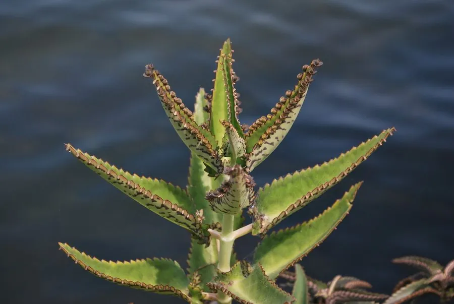

多肉植物 · 植物界
落地生根 Kalanchoe daigremontiana

景天科伽蓝菜属多肉，叶片边缘长出大量小植株，脱落后即可生根，原产马达加斯加，是繁殖力极强的“不死鸟”。
- 分类
- 门被子植物门纲木兰纲目虎耳草目科景天科属伽蓝菜属
- 栖息环境
- 马达加斯加干旱地区的石质坡地与灌丛
- 地理分布
- 原产马达加斯加，世界各地盆栽，中国南方常见
- 保护级别
- 暂无评估；部分地区逸生为入侵植物
物种志
落地生根为景天科伽蓝菜属的多年生肉质草本，株高 0.5–1.5 米，茎直立，叶片对生，肉质，三角状卵形，长 10–20 厘米，边缘有锯齿，叶缘凹处长出大量带根的小植株。花为圆锥花序，花冠筒状，粉红色或橙红色，花期冬季至春季；果实为蓇葖果。
落地生根原产马达加斯加的干旱地区，喜阳光充足、温暖干燥和通风良好的环境，耐旱、怕积水。它叶片边缘能直接长出小植株，脱落后落地即生根，因此得名“落地生根”，也叫“不死鸟”。栽培用排水良好的沙质土，生长期干透浇透，冬季保持 10℃ 以上；繁殖以叶缘小植株和茎段扦插为主，极易成活。它繁殖力强，在温暖地区逸生后可能成为入侵植物。
形态与习性
- 株高0.5–1.5 米
- 叶片三角状卵形，叶缘生小植株
- 花期冬季至春季，花筒状、粉红色
- 光照喜充足阳光
- 水分耐旱，干透浇透
- 土壤排水良好的沙质土
- 繁殖叶缘小植株、茎段扦插
- 注意繁殖力强，逸生可能入侵
趣味知识
- 落地生根的叶缘会长出带根的小植株，掉落地面就能成活。
- 它因此被称为“不死鸟”，繁殖力极强。
- 在温暖地区逸生后可能大量蔓延，需注意控制。